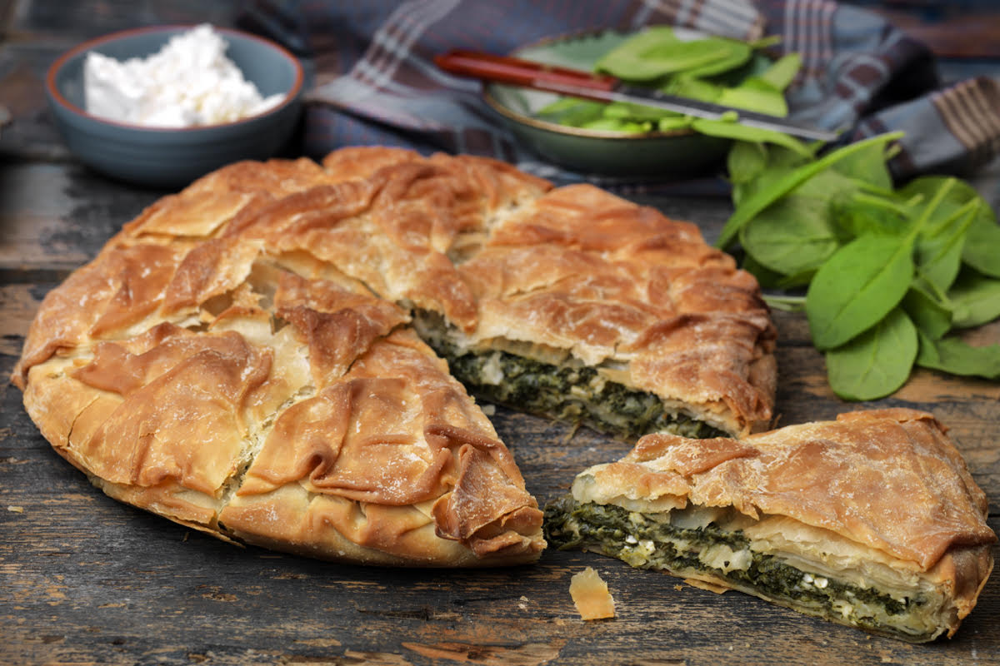

Spanakopita

Description
Spanakopita (meaning Spinach pie is the most famous Greek pie.
It is a typical traditional Greek pie with many layers, spinach and often, feta cheese.
Ingredients
- Spinach
- Feta cheese
- Olive oil
- Pastry sheet
- Onion
Steps
- Put the spinach leaves in boiled water.
- Wait some minutes and remove the leaves.
- Mix the leaves with feta cheese, onion, olive oil and seasoning.
- On a baking pan, lay the pastry sheet and rinse with olive oil.
- Pour some spinach mix (step 3 above), lay some pastry sheet, and repeat as many times as necessary.
- Bake in the oven for 2 hours on low heat.
- Bon appetit!